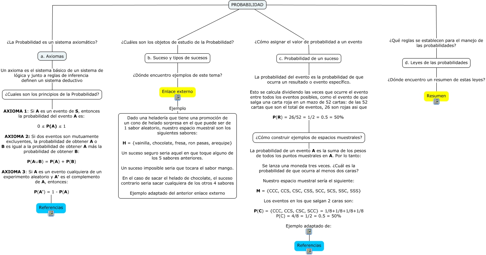

Probabilidad
Teorias de probabilidad
WARNING:
JavaScript is turned OFF. None of the links on this concept map will
work until it is reactivated.
If you need help turning JavaScript On, click here.
Este Cmap, tiene información relacionada con: Probabilidad, Enlace externo Ejemplo Dado una heladería que tiene una promoción de un cono de helado sorpresa en el que puede ser de 1 sabor aleatorio, nuestro espacio muestral son los siguientes sabores: H = {vainilla, chocolate, fresa, ron pasas, arequipe} Un suceso seguro seria aquel en que toque alguno de los 5 sabores anteriores. Un suceso imposible seria que tocara el sabor mango. En el caso de sacar el helado de chocolate, el suceso contrario seria sacar cualquiera de los otros 4 sabores Ejemplo adaptado del anterior enlace externo, PROBABILIDAD ¿Cómo asignar el valor de probabilidad a un evento c. Probabilidad de un suceso, PROBABILIDAD ¿Cuáles son los objetos de estudio de la Probabilidad? b. Suceso y tipos de sucesos, ¿Cuales son los principios de la Probabilidad? AXIOMA 1: Si A es un evento de S, entonces la probabilidad del evento A es: 0 ≤ P(A) ≤ 1 AXIOMA 2: Si dos eventos son mutuamente excluyentes, la probabilidad de obtener A o B es igual a la probabilidad de obtener A más la probabilidad de obtener B: P(A∪B) = P(A) + P(B) AXIOMA 3: Si A es un evento cualquiera de un experimento aleatorio y A' es el complemento de A, entonces: P(A') = 1 - P(A) Referencias, d. Leyes de las probabilidades ¿Dónde encuentro un resumen de estas leyes? Resumen, a. Axiomas Un axioma es el sistema básico de un sistema de lógica y junto a reglas de inferencia definen un sistema deductivo ¿Cuales son los principios de la Probabilidad?, PROBABILIDAD ¿La Probabilidad es un sistema axiomático? a. Axiomas, PROBABILIDAD ¿Qué reglas se establecen para el manejo de las probabilidades? d. Leyes de las probabilidades, c. Probabilidad de un suceso La probabilidad del evento es la probabilidad de que ocurra un resultado o evento específico. Esto se calcula dividiendo las veces que ocurre el evento entre todos los eventos posibles, como el evento de que salga una carta roja en un mazo de 52 cartas: de las 52 cartas que son el total de eventos, 26 son rojas asi que P(R) = 26/52 = 1/2 = 0.5 = 50% ¿Cómo construir ejemplos de espacios muestrales?, ¿Cómo construir ejemplos de espacios muestrales? La probabilidad de un evento A es la suma de los pesos de todos los puntos muestrales en A. Por lo tanto: Se lanza una moneda tres veces. ¿Cuál es la probabilidad de que ocurra al menos dos caras? Nuestro espacio muestral sería el siguiente: M = {CCC, CCS, CSC, CSS, SCC, SCS, SSC, SSS} Los eventos en los que salgan 2 caras son: P(C) = {CCC, CCS, CSC, SCC} = 1/8+1/8+1/8+1/8 P(C) = 4/8 = 1/2 = 0.5 = 50% Ejemplo adaptado de: Referencias, b. Suceso y tipos de sucesos ¿Dónde encuentro ejemplos de este tema? Enlace externo
